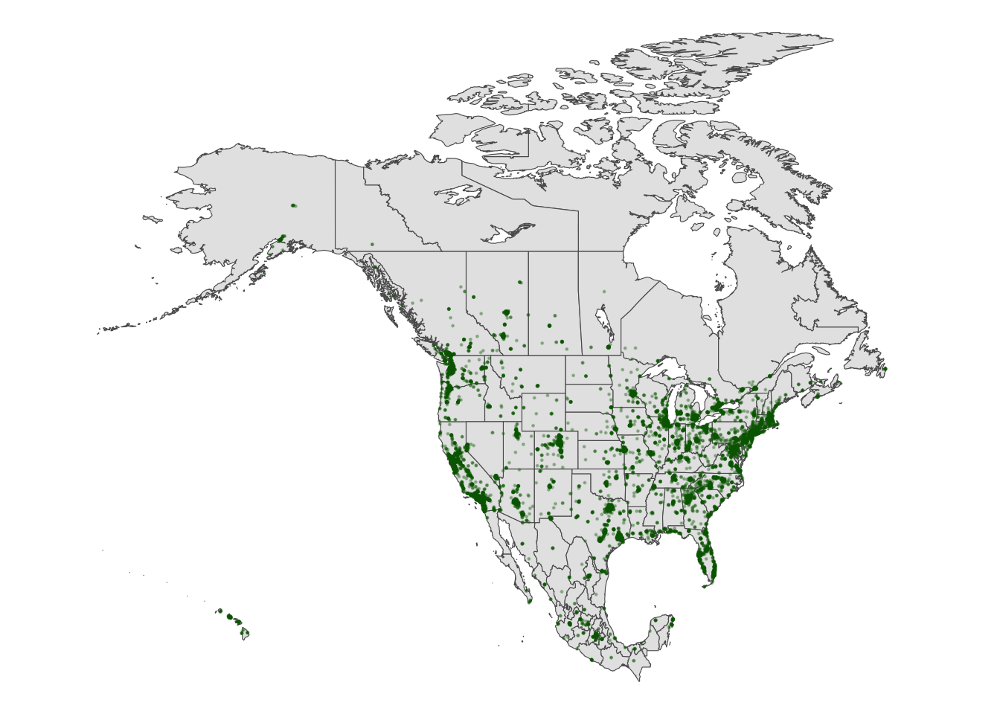

Use this file for practice with the spatial viz in-class activity. Refer to the class website for details.
9.1 Reading Activities
# Load tidyverse package for plotting and wranglinglibrary(tidyverse)
── Attaching core tidyverse packages ──────────────────────── tidyverse 2.0.0 ──
✔ dplyr 1.1.4 ✔ readr 2.1.5
✔ forcats 1.0.0 ✔ stringr 1.5.1
✔ ggplot2 3.5.1 ✔ tibble 3.2.1
✔ lubridate 1.9.4 ✔ tidyr 1.3.1
✔ purrr 1.0.4
── Conflicts ────────────────────────────────────────── tidyverse_conflicts() ──
✖ dplyr::filter() masks stats::filter()
✖ dplyr::lag() masks stats::lag()
ℹ Use the conflicted package (<http://conflicted.r-lib.org/>) to force all conflicts to become errors
# Import the data and only keep 2 addressesenergy <-read.csv("https://mac-stat.github.io/data/MacNaturalGas.csv") |>mutate(date =as.Date(paste0(month, "/1/", year), "%m/%d/%Y")) |>filter(address !="c")# Check it outhead(energy)
month year price therms hdd address renovated date
1 6 2005 35.21 21 0 a no 2005-06-01
2 7 2005 37.37 21 0 a no 2005-07-01
3 8 2005 36.93 21 3 a no 2005-08-01
4 9 2005 62.36 39 61 a no 2005-09-01
5 10 2005 184.15 120 416 a no 2005-10-01
6 11 2005 433.35 286 845 a no 2005-11-01
9.1.1 Example 1
What was the range and typical energy used each month, as measured by therms? How does this differ by address?
Warning: Removed 12 rows containing non-finite outside the scale range
(`stat_smooth()`).
Warning: Removed 12 rows containing missing values or values outside the scale range
(`geom_point()`).
9.1.4 Example 4
That seems unfortunate that energy usage went up after renovations. But also fishy.
Take 5 minutes (in your groups) to try and explain what’s going on here. Think: What confounding or lurking or omitted variable related to energy usage are we ignoring here? Try to make some plots to prove your point.
`geom_smooth()` using method = 'loess' and formula = 'y ~ x'
Warning: Removed 12 rows containing non-finite outside the scale range
(`stat_smooth()`).
Therms go up in almost the exact same pattern as HDD
9.1.5 Example 5
Let’s summarize the punchlines by filling in the ???. It seemed that:
After renovation… energy use increased. BUT this was explained by a confounding or omitted or lurking variable: hdd
After renovation… hdd went up… which then leads to higher energy use. Thus, when controlling for hdd, renovations led to decreased energy use.
9.2 Preview
9.3 Part 1: Interactive points on a map with leaflet
Leaflet is an open-source JavaScript library for creating maps. We can use it inside R through the leaflet package.
This uses a different plotting framework than ggplot2, but still has a tidyverse feel (which will become more clear as we learn other tidyverse tools!).
The general steps are as follows:
Create a map widget by calling leaflet() and telling it the data to use. Add a base map using addTiles() (the default) or addProviderTiles(). Add layers to the map using layer functions (e.g. addMarkers(), addPolygons()). Print the map widget to display it. :::
9.3.1 Exercise 1: A leaflet with markers / points
fave_places <-read.csv("https://hash-mac.github.io/stat112site-s25/data/our_fave_places.csv")# Check it outhead(fave_places)
# Load the leaflet packagelibrary(leaflet)# Just a plotting frameleaflet(data = fave_places)
# Now what do we have?leaflet(data = fave_places) |>addTiles()
# Now what do we have?# longitude and latitude refer to the variables in our dataleaflet(data = fave_places) |>addTiles() |>addMarkers(lng =~longitude, lat =~latitude)
9.3.2 Exercise 2: Details
Details:
# Load package needed to change colorlibrary(gplots)
Attaching package: 'gplots'
The following object is masked from 'package:stats':
lowess
# We can add colored circles instead of markers at each locationleaflet(data = fave_places) |>addTiles() |>addCircles(color =col2hex("red"))
# We can change the background# Mark locations with yellow dots# And connect the dots, in their order in the dataset, with green lines# (These green lines don't mean anything here, but would if this were somebody's travel path!)leaflet(data = fave_places) |>addProviderTiles("USGS") |>addCircles(weight =10, opacity =1, color =col2hex("yellow")) |>addPolylines(lng =~longitude,lat =~latitude,color =col2hex("green") )
addProviderTiles() changes the base map. To explore all available provider base maps, type providers in the console. (Though some don’t work :/)
Use addMarkers() or addCircles() to mark locations. Type ?addControl into the console to pull up a help file which summarizes the aesthetics of these markers and how you can change them. For example:
weight = how thick to make the lines, points, pixels opacity = transparency (like alpha in ggplot2) colors need to be in “hex” form. We used the col2hex() function from the gplots library to do that
# Don't worry about the syntaxstarbucks_mn <- starbucks |>filter(Country =="US", State.Province =="MN")
leaflet(data = starbucks_mn) |>addTiles() |>addMarkers(lng =~Longitude, lat =~Latitude)
9.4 Part 2: Static Points on a Map
Laflet is only good for static maps and is not very good at plotting many points
9.4.1 Exercise 3: Simple Scatterplot
Let’s start with the ggplot() tools we already know. Construct a scatterplot of all starbucks locations, not just those in Minnesota, with:
Latitude and Longitude coordinates (which goes on the y-axis?!) Make the points transparent (alpha = 0.2) and smaller (size = 0.2) It’s pretty cool that the plots we already know can provide some spatial context. But what don’t you like about this plot?
Gives longitude and latitude but does not give any information on the spatial locatio of the locations, only the coordinates.
9.4.2 Exercise 4
9.4.2.1 Part a
# Load the packagelibrary(rnaturalearth)# Get info about country boundaries across the world# in a "sf" or simple feature formatworld_boundaries <-ne_countries(returnclass ="sf")
9.4.2.2 Part b
Build a new map:
# What does this code produce?# What geom are we using for the point map?ggplot(world_boundaries) +geom_sf()
# Load package needed to change map themelibrary(mosaic)
Registered S3 method overwritten by 'mosaic':
method from
fortify.SpatialPolygonsDataFrame ggplot2
The 'mosaic' package masks several functions from core packages in order to add
additional features. The original behavior of these functions should not be affected by this.
Attaching package: 'mosaic'
The following object is masked from 'package:Matrix':
mean
The following objects are masked from 'package:dplyr':
count, do, tally
The following object is masked from 'package:purrr':
cross
The following object is masked from 'package:ggplot2':
stat
The following objects are masked from 'package:stats':
binom.test, cor, cor.test, cov, fivenum, IQR, median, prop.test,
quantile, sd, t.test, var
The following objects are masked from 'package:base':
max, mean, min, prod, range, sample, sum
# Add a point for each Starbucks# NOTE: The Starbucks info is in our starbucks data, not world_boundaries# How does this change how we use geom_point?!ggplot(world_boundaries) +geom_sf() +geom_point(data = starbucks,aes(x = Longitude, y = Latitude),alpha =0.3, size =0.2, color ="darkgreen" ) +theme_map()
Warning: Removed 1 row containing missing values or values outside the scale range
(`geom_point()`).
9.4.2.3 Part c: what we learned
Starbucks is most concentrated on the east and west coasts of America, Europe, and east and south Asia.
9.4.3 Exercise 5: Zooming in on some countries
Instead of world_boundaries <- ne_countries(returnclass = ‘sf’) we could zoom in on…
the continent of Africa: ne_countries(continent = ‘Africa’, returnclass = ‘sf’) a set of countries: ne_countries(country = c(‘france’, ‘united kingdom’, ‘germany’), returnclass = ‘sf’) boundaries within a country: ne_states(country = ‘united states of america’, returnclass = ‘sf’) Our goal here will be to map the Starbucks locations in Canada, Mexico, and the US.
9.4.3.1 Part a
To make this map, we again need two pieces of information.
Data on Starbucks for only Canada, Mexico, and the US, labeled as “CA”, “MX”, “US” in the starbucks data.
# We'll learn this syntax soon! Don't worry about it now.starbucks_cma <- starbucks |>filter(Country %in%c('CA', 'MX', 'US'))
A background map of state- and national-level boundaries in Canada, Mexico, and the US. This requires ne_states() in the rnaturalearth package where the countries are labeled ‘canada’, ‘mexico’, ‘united states of america’.
cma_boundaries <-ne_states(country =c("canada", "mexico", "united states of america"),returnclass ="sf")
9.4.3.2 Part b
# Just the boundariesggplot(cma_boundaries) +geom_sf()
# Add the points# And zoom inggplot(cma_boundaries) +geom_sf() +geom_point(data = starbucks_cma,aes(x = Longitude, y = Latitude),alpha =0.3,size =0.2,color ="darkgreen" ) +coord_sf(xlim =c(-179.14, -50)) +theme_map()

9.4.4 Exercise 6: A state and county-level map
Let’s get an even higher resolution map of Starbucks locations within the states of Minnesota, Wisconsin, North Dakota, and South Dakota, with a background map at the county-level.
9.4.4.1 Part a
To make this map, we again need two pieces of information.
Data on Starbucks for only the states of interest.
A background map of state- and county-level boundaries in these states. This requires st_as_sf() in the sf package, and map() in the maps package, where the countries are labeled ‘minnesota’, ‘north dakota’, etc.
# Load packageslibrary(sf)
Linking to GEOS 3.11.0, GDAL 3.5.3, PROJ 9.1.0; sf_use_s2() is TRUE
library(maps)
Attaching package: 'maps'
The following object is masked from 'package:purrr':
map
# Get the boundariesmidwest_boundaries <-st_as_sf( maps::map("county",region =c("minnesota", "wisconsin", "north dakota", "south dakota"), fill =TRUE, plot =FALSE))# Check it outhead(midwest_boundaries)
Simple feature collection with 6 features and 1 field
Geometry type: MULTIPOLYGON
Dimension: XY
Bounding box: xmin: -96.81268 ymin: 45.05167 xmax: -93.01397 ymax: 48.53526
Geodetic CRS: +proj=longlat +ellps=clrk66 +no_defs +type=crs
ID geom
minnesota,aitkin minnesota,aitkin MULTIPOLYGON (((-93.03689 4...
minnesota,anoka minnesota,anoka MULTIPOLYGON (((-93.51817 4...
minnesota,becker minnesota,becker MULTIPOLYGON (((-95.14537 4...
minnesota,beltrami minnesota,beltrami MULTIPOLYGON (((-95.58655 4...
minnesota,benton minnesota,benton MULTIPOLYGON (((-93.77027 4...
minnesota,big stone minnesota,big stone MULTIPOLYGON (((-96.10794 4...
9.4.4.2 Part b
Construct the viz
ggplot(midwest_boundaries) +geom_sf() +geom_point(data = starbucks_midwest,aes(x = Longitude, y = Latitude),alpha =0.7,size =0.2, color ='darkgreen' ) +theme_map()
9.4.5 Exercise 7: Contour maps
Especially when there are lots of point locations, and those locations start overlapping on a map, it can be tough to visualize areas of higher density. Consider the Starbucks locations in Canada, Mexico, and the US that we mapped earlier:
# Point map (we made this earlier)ggplot(cma_boundaries) +geom_sf() +geom_point(data = starbucks_cma,aes(x = Longitude, y = Latitude),alpha =0.3,size =0.2,color ="darkgreen" ) +coord_sf(xlim =c(-179.14, -50), ylim =c(14.54, 83.11)) +theme_map()
Now check out the contour map:
# What changed in the plot?# What changed in our code?!ggplot(cma_boundaries) +geom_sf() +geom_density_2d(data = starbucks_cma,aes(x = Longitude, y = Latitude),size =0.2,color ="darkgreen" ) +coord_sf(xlim =c(-179.14, -50), ylim =c(14.54, 83.11)) +theme_map()
Warning: Using `size` aesthetic for lines was deprecated in ggplot2 3.4.0.
ℹ Please use `linewidth` instead.
9.5 Part 3: Choropleth maps
Spatial data isn’t always in the form of point locations! For example, recall the state and county-level data on presidential elections.
In these datasets, we’re interested in the overall election outcome by region (state or county), not the specific geographic location of some observation. Let’s wrangle our data first. We’ll focus on just a few variables of interest, and create a new variable (repub_20_categories) that discretizes the repub_pct_20 variable into increments of 5 percentage points (for states) or 10 percentage points (for counties):
Let’s map the 2020 Republican support in each state, repub_pct_20.
9.5.1.1 Part a
We again need two pieces of information.
Data on elections in each state, which we already have: elections_by_state.
A background map of state boundaries in the US. The boundaries we used for point maps don’t work here. (Optional detail: they’re sf objects and we now need a data.frame object.) Instead, we can use the map_data() function from the ggplot2 package:
# Get the latitude and longitude coordinates of state boundariesstates_map <-map_data("state")# Check it outhead(states_map)
long lat group order region subregion
1 -87.46201 30.38968 1 1 alabama <NA>
2 -87.48493 30.37249 1 2 alabama <NA>
3 -87.52503 30.37249 1 3 alabama <NA>
4 -87.53076 30.33239 1 4 alabama <NA>
5 -87.57087 30.32665 1 5 alabama <NA>
6 -87.58806 30.32665 1 6 alabama <NA>
NoteImportant detail: Note that the region variable in states_map, and the state_name variable in elections_by_state both label states by the full name in lower case letters. This is critical to the background map and our data being able to communicate.
9.5.1.2 Part b
Now map repub_pct_20 by state
# Note where the dataset, elections_by_state, is used# Note where the background map, states_map, is usedggplot(elections_by_state, aes(map_id = state_name, fill = repub_pct_20)) +geom_map(map = states_map) +expand_limits(x = states_map$long, y = states_map$lat) +theme_map()
Make it nicer:
# Make it nicer!ggplot(elections_by_state, aes(map_id = state_name, fill = repub_pct_20)) +geom_map(map = states_map) +expand_limits(x = states_map$long, y = states_map$lat) +theme_map() +scale_fill_gradientn(name ="% Republican", colors =c("blue", "purple", "red"), values = scales::rescale(seq(0, 100, by =5)))
It’s not easy to get fine control over the color scale for the quantitative repub_pct_20 variable.
Instead, let’s plot the discretized version, repub_20_categories:
ggplot(elections_by_state, aes(map_id = state_name, fill = repub_20_categories)) +geom_map(map = states_map) +expand_limits(x = states_map$long, y = states_map$lat) +theme_map()
Refine color palette:
# Load package needed for refining color palettelibrary(RColorBrewer)# Now fix the colorsggplot(elections_by_state, aes(map_id = state_name, fill = repub_20_categories)) +geom_map(map = states_map) +expand_limits(x = states_map$long, y = states_map$lat) +theme_map() +scale_fill_manual(values =rev(brewer.pal(8, "RdBu")), name ="% Republican")
9.5.1.3 Part c
We can add other layers, like points, on top of a choropleth map. Add a Starbucks layer! Do you notice any relationship between Starbucks and elections? Or are we just doing things at this point? ;)
# Get only the starbucks data from the USstarbucks_us <- starbucks |>filter(Country =="US")# Map itggplot(elections_by_state, aes(map_id = state_name, fill = repub_20_categories)) +geom_map(map = states_map) +geom_point(data = starbucks_us,aes(x = Longitude, y = Latitude),size =0.05,alpha =0.2,inherit.aes =FALSE ) +expand_limits(x = states_map$long, y = states_map$lat) +theme_map() +scale_fill_manual(values =rev(brewer.pal(8, "RdBu")), name ="% Republican")
Details (if you’re curious)
map_id is a required aesthetic for geom_map(). - It specifies which variable in our dataset indicates the region (here state_name). - It connects this variable (state_name) to the region variable in our mapping background (states_map). These variables must have the same possible outcomes in order to be matched up (alabama, alaska, arizona,…).
expand_limits() assures that the map covers the entire area it’s supposed to, by pulling longitudes and latitudes from the states_map.
9.5.1.4 Part d
We used geom_sf() for point maps. What geom do we use for choropleth maps? - geom_map
9.5.2 Exercise 9: County-level choropleth maps
Let’s map the 2020 Republican support in each county.
9.5.2.1 Part a
We again need two pieces of information.
Data on elections in each county, which we already have: elections_by_county.
A background map of county boundaries in the US, stored in the county_map dataset in the socviz package:
# Get the latitude and longitude coordinates of county boundarieslibrary(socviz)data(county_map) # Check it outhead(county_map)
Important detail: We officially have a headache. Our county_map refers to each county by a 5-number id. Our elections_by_counties data refers to each county by a county_fips code, which is mostly the same as id, BUT drops any 0’s at the beginning of the code.
state_name state_abbr county_name county_fips repub_pct_20 median_age
1 Alabama AL Autauga County 1001 71.44 37.5
2 Alabama AL Baldwin County 1003 76.17 41.5
3 Alabama AL Barbour County 1005 53.45 38.3
4 Alabama AL Bibb County 1007 78.43 39.4
5 Alabama AL Blount County 1009 89.57 39.6
6 Alabama AL Bullock County 1011 24.84 39.6
median_rent repub_20_categories
1 668 70-79
2 693 70-79
3 382 50-59
4 351 70-79
5 403 80-89
6 276 20-29
This just means that we have to wrangle the data so that it can communicate with the background map.
# Add 0's at the beginning of any fips_code that's fewer than 5 numbers long# Don't worry about the syntaxelections_by_counties <- elections_by_counties |>mutate(county_fips =as.character(county_fips)) |>mutate(county_fips =ifelse(nchar(county_fips) ==4, paste0("0", county_fips), county_fips))
9.5.2.2 Part b
Now map Republican support by county. Let’s go straight to the discretized repub_20_categories variable, and a good color scale.
ggplot(elections_by_counties, aes(map_id = county_fips, fill = repub_20_categories)) +geom_map(map = county_map) +scale_fill_manual(values =rev(brewer.pal(10, "RdBu")), name ="% Republican") +expand_limits(x = county_map$long, y = county_map$lat) +theme_map() +theme(legend.position ="right") +coord_equal()
9.5.3 Exercise 10: Play Around!
Construct county-level maps of median_rent and median_age.
Though ggplot() is often better for this purpose, we can also make choropleth maps with leaflet(). If you’re curious, check out the leaflet documentation:
---title: "Spatial Viz"---Use this file for practice with the **spatial viz** in-class activity. Refer to the class website for details.## Reading Activities```{r}# Load tidyverse package for plotting and wranglinglibrary(tidyverse)# Import the data and only keep 2 addressesenergy <-read.csv("https://mac-stat.github.io/data/MacNaturalGas.csv") |>mutate(date =as.Date(paste0(month, "/1/", year), "%m/%d/%Y")) |>filter(address !="c")# Check it outhead(energy)```### Example 1What was the range and typical energy used each month, as measured by therms? How does this differ by address?```{r}ggplot(energy, aes(x=therms, y=address, fill=address)) +geom_boxplot()```### Example 2How did energy use (therms) change over time (date) at the two addresses?```{r}ggplot(energy, aes(y=therms, x=date, color=address)) +geom_point() +geom_smooth() +facet_wrap(~ address)```### Example 3How did the typical energy use (therms) at the two addresses change before and after they were renovated?```{r}ggplot(energy, aes(y=therms, x=date, color=renovated)) +geom_point() +geom_smooth(method="lm") +facet_wrap(~ address)```### Example 4That seems unfortunate that energy usage went up after renovations. But also fishy.Take 5 minutes (in your groups) to try and explain what’s going on here. Think: What confounding or lurking or omitted variable related to energy usage are we ignoring here? Try to make some plots to prove your point.```{r}ggplot(energy, aes(x=date,y=hdd, color=address)) +geom_smooth()```So: HDD goes up over timeAnd:```{r}ggplot(energy, aes(x=date, y=therms, color=address)) +geom_smooth()```Therms go up in almost the exact same pattern as HDD ### Example 5Let’s summarize the punchlines by filling in the ???. It seemed that:After renovation…energy use increased.BUT this was explained by a confounding or omitted or lurking variable: hddAfter renovation…hdd went up…which then leads to higher energy use.Thus, when controlling for hdd, renovations led to decreased energy use.## Preview## Part 1: Interactive points on a map with leafletLeaflet is an open-source JavaScript library for creating maps. We can use it inside R through the leaflet package.This uses a different plotting framework than ggplot2, but still has a tidyverse feel (which will become more clear as we learn other tidyverse tools!).The general steps are as follows:Create a map widget by calling leaflet() and telling it the data to use.Add a base map using addTiles() (the default) or addProviderTiles().Add layers to the map using layer functions (e.g. addMarkers(), addPolygons()).Print the map widget to display it.:::### Exercise 1: A leaflet with markers / points```{r}fave_places <-read.csv("https://hash-mac.github.io/stat112site-s25/data/our_fave_places.csv")# Check it outhead(fave_places)```#### Part a```{r}# Load the leaflet packagelibrary(leaflet)# Just a plotting frameleaflet(data = fave_places)``````{r}# Now what do we have?leaflet(data = fave_places) |>addTiles()``````{r}# Now what do we have?# longitude and latitude refer to the variables in our dataleaflet(data = fave_places) |>addTiles() |>addMarkers(lng =~longitude, lat =~latitude)```### Exercise 2: DetailsDetails: ```{r}# Load package needed to change colorlibrary(gplots)# We can add colored circles instead of markers at each locationleaflet(data = fave_places) |>addTiles() |>addCircles(color =col2hex("red"))``````{r}# We can change the background# Mark locations with yellow dots# And connect the dots, in their order in the dataset, with green lines# (These green lines don't mean anything here, but would if this were somebody's travel path!)leaflet(data = fave_places) |>addProviderTiles("USGS") |>addCircles(weight =10, opacity =1, color =col2hex("yellow")) |>addPolylines(lng =~longitude,lat =~latitude,color =col2hex("green") )```addProviderTiles() changes the base map.To explore all available provider base maps, type providers in the console. (Though some don’t work :/)Use addMarkers() or addCircles() to mark locations. Type ?addControl into the console to pull up a help file which summarizes the aesthetics of these markers and how you can change them. For example:weight = how thick to make the lines, points, pixelsopacity = transparency (like alpha in ggplot2)colors need to be in “hex” form. We used the col2hex() function from the gplots library to do that### Exercise 3: My turn#### part 1: Loading the Data```{r}# Import starbucks location datastarbucks <-read.csv("https://mac-stat.github.io/data/starbucks.csv")``````{r}# Don't worry about the syntaxstarbucks_mn <- starbucks |>filter(Country =="US", State.Province =="MN")``````{r}leaflet(data = starbucks_mn) |>addTiles() |>addMarkers(lng =~Longitude, lat =~Latitude)```## Part 2: Static Points on a MapLaflet is only good for static maps and is not very good at plotting many points### Exercise 3: Simple ScatterplotLet’s start with the ggplot() tools we already know. Construct a scatterplot of all starbucks locations, not just those in Minnesota, with:Latitude and Longitude coordinates (which goes on the y-axis?!)Make the points transparent (alpha = 0.2) and smaller (size = 0.2)It’s pretty cool that the plots we already know can provide some spatial context. But what don’t you like about this plot?```{r}ggplot(starbucks_mn, aes(x=Longitude, y=Latitude)) +geom_point(alpha=0.2, size=0.2)```Gives longitude and latitude but does not give any information on the spatial locatio of the locations, only the coordinates. ### Exercise 4#### Part a```{r}# Load the packagelibrary(rnaturalearth)# Get info about country boundaries across the world# in a "sf" or simple feature formatworld_boundaries <-ne_countries(returnclass ="sf")```#### Part bBuild a new map: ```{r}# What does this code produce?# What geom are we using for the point map?ggplot(world_boundaries) +geom_sf()``````{r}# Load package needed to change map themelibrary(mosaic)# Add a point for each Starbucks# NOTE: The Starbucks info is in our starbucks data, not world_boundaries# How does this change how we use geom_point?!ggplot(world_boundaries) +geom_sf() +geom_point(data = starbucks,aes(x = Longitude, y = Latitude),alpha =0.3, size =0.2, color ="darkgreen" ) +theme_map()```#### Part c: what we learnedStarbucks is most concentrated on the east and west coasts of America, Europe, and east and south Asia. ### Exercise 5: Zooming in on some countriesInstead of world_boundaries <- ne_countries(returnclass = 'sf') we could zoom in on…the continent of Africa: ne_countries(continent = 'Africa', returnclass = 'sf')a set of countries: ne_countries(country = c('france', 'united kingdom', 'germany'), returnclass = 'sf')boundaries within a country: ne_states(country = 'united states of america', returnclass = 'sf')Our goal here will be to map the Starbucks locations in Canada, Mexico, and the US.#### Part aTo make this map, we again need two pieces of information.1) Data on Starbucks for only Canada, Mexico, and the US, labeled as “CA”, “MX”, “US” in the starbucks data.```{r}# We'll learn this syntax soon! Don't worry about it now.starbucks_cma <- starbucks |>filter(Country %in%c('CA', 'MX', 'US'))```2) A background map of state- and national-level boundaries in Canada, Mexico, and the US. This requires ne_states() in the rnaturalearth package where the countries are labeled ‘canada’, ‘mexico’, ‘united states of america’.```{r}cma_boundaries <-ne_states(country =c("canada", "mexico", "united states of america"),returnclass ="sf")```#### Part b```{r}# Just the boundariesggplot(cma_boundaries) +geom_sf()``````{r}# Add the points# And zoom inggplot(cma_boundaries) +geom_sf() +geom_point(data = starbucks_cma,aes(x = Longitude, y = Latitude),alpha =0.3,size =0.2,color ="darkgreen" ) +coord_sf(xlim =c(-179.14, -50)) +theme_map()```### Exercise 6: A state and county-level mapLet’s get an even higher resolution map of Starbucks locations within the states of Minnesota, Wisconsin, North Dakota, and South Dakota, with a background map at the county-level.#### Part aTo make this map, we again need two pieces of information.1) Data on Starbucks for only the states of interest.```{r}starbucks_midwest <- starbucks |>filter(State.Province %in%c("MN", "ND", "SD", "WI"))```2) A background map of state- and county-level boundaries in these states. This requires st_as_sf() in the sf package, and map() in the maps package, where the countries are labeled ‘minnesota’, ‘north dakota’, etc.```{r}# Load packageslibrary(sf)library(maps)# Get the boundariesmidwest_boundaries <-st_as_sf( maps::map("county",region =c("minnesota", "wisconsin", "north dakota", "south dakota"), fill =TRUE, plot =FALSE))# Check it outhead(midwest_boundaries)```#### Part bConstruct the viz```{r}ggplot(midwest_boundaries) +geom_sf() +geom_point(data = starbucks_midwest,aes(x = Longitude, y = Latitude),alpha =0.7,size =0.2, color ='darkgreen' ) +theme_map()```### Exercise 7: Contour mapsEspecially when there are lots of point locations, and those locations start overlapping on a map, it can be tough to visualize areas of higher density. Consider the Starbucks locations in Canada, Mexico, and the US that we mapped earlier:```{r}# Point map (we made this earlier)ggplot(cma_boundaries) +geom_sf() +geom_point(data = starbucks_cma,aes(x = Longitude, y = Latitude),alpha =0.3,size =0.2,color ="darkgreen" ) +coord_sf(xlim =c(-179.14, -50), ylim =c(14.54, 83.11)) +theme_map()```Now check out the contour map:```{r}# What changed in the plot?# What changed in our code?!ggplot(cma_boundaries) +geom_sf() +geom_density_2d(data = starbucks_cma,aes(x = Longitude, y = Latitude),size =0.2,color ="darkgreen" ) +coord_sf(xlim =c(-179.14, -50), ylim =c(14.54, 83.11)) +theme_map()```## Part 3: Choropleth mapsSpatial data isn’t always in the form of point locations! For example, recall the state and county-level data on presidential elections.```{r}elections_by_state <-read.csv("https://mac-stat.github.io/data/election_2020_by_state.csv")elections_by_counties <-read.csv("https://mac-stat.github.io/data/election_2020_county.csv")```In these datasets, we’re interested in the overall election outcome by region (state or county), not the specific geographic location of some observation. Let’s wrangle our data first. We’ll focus on just a few variables of interest, and create a new variable (repub_20_categories) that discretizes the repub_pct_20 variable into increments of 5 percentage points (for states) or 10 percentage points (for counties):```{r}# Don't worry about the code!elections_by_state <- elections_by_state |>filter(state_abbr !="DC") |>select(state_name, state_abbr, repub_pct_20) |>mutate(repub_20_categories =cut(repub_pct_20, breaks =seq(30, 70, by =5), labels =c("30-34", "35-39", "40-44", "45-49","50-54", "55-59", "60-64", "65-70"), include.lowest =TRUE))elections_by_counties <- elections_by_counties |>select(state_name, state_abbr, county_name, county_fips, repub_pct_20, median_age, median_rent) |>mutate(repub_20_categories =cut(repub_pct_20, breaks =seq(0, 100, by =10),labels =c("0-9", "10-19", "20-29", "30-39", "40-49","50-59", "60-69", "70-79", "80-89", "90-100"),include.lowest =TRUE))```### Exercise 8: State-level Chloropleth mapsLet’s map the 2020 Republican support in each state, repub_pct_20.#### Part aWe again need two pieces of information.1) Data on elections in each state, which we already have: elections_by_state.2) A background map of state boundaries in the US. The boundaries we used for point maps don’t work here. (Optional detail: they’re sf objects and we now need a data.frame object.) Instead, we can use the map_data() function from the ggplot2 package:```{r}# Get the latitude and longitude coordinates of state boundariesstates_map <-map_data("state")# Check it outhead(states_map)```**Note***Important detail:* Note that the region variable in states_map, and the state_name variable in elections_by_state both label states by the full name in lower case letters. *This is critical to the background map and our data being able to communicate.*#### Part bNow map repub_pct_20 by state```{r}# Note where the dataset, elections_by_state, is used# Note where the background map, states_map, is usedggplot(elections_by_state, aes(map_id = state_name, fill = repub_pct_20)) +geom_map(map = states_map) +expand_limits(x = states_map$long, y = states_map$lat) +theme_map() ```Make it nicer: ```{r}# Make it nicer!ggplot(elections_by_state, aes(map_id = state_name, fill = repub_pct_20)) +geom_map(map = states_map) +expand_limits(x = states_map$long, y = states_map$lat) +theme_map() +scale_fill_gradientn(name ="% Republican", colors =c("blue", "purple", "red"), values = scales::rescale(seq(0, 100, by =5)))```It’s not easy to get fine control over the color scale for the quantitative repub_pct_20 variable.Instead, let’s plot the discretized version, repub_20_categories:```{r}ggplot(elections_by_state, aes(map_id = state_name, fill = repub_20_categories)) +geom_map(map = states_map) +expand_limits(x = states_map$long, y = states_map$lat) +theme_map()```Refine color palette: ```{r}# Load package needed for refining color palettelibrary(RColorBrewer)# Now fix the colorsggplot(elections_by_state, aes(map_id = state_name, fill = repub_20_categories)) +geom_map(map = states_map) +expand_limits(x = states_map$long, y = states_map$lat) +theme_map() +scale_fill_manual(values =rev(brewer.pal(8, "RdBu")), name ="% Republican")```#### Part cWe can add other layers, like points, on top of a choropleth map. Add a Starbucks layer! Do you notice any relationship between Starbucks and elections? Or are we just doing things at this point? ;)```{r}# Get only the starbucks data from the USstarbucks_us <- starbucks |>filter(Country =="US")# Map itggplot(elections_by_state, aes(map_id = state_name, fill = repub_20_categories)) +geom_map(map = states_map) +geom_point(data = starbucks_us,aes(x = Longitude, y = Latitude),size =0.05,alpha =0.2,inherit.aes =FALSE ) +expand_limits(x = states_map$long, y = states_map$lat) +theme_map() +scale_fill_manual(values =rev(brewer.pal(8, "RdBu")), name ="% Republican")```**Details (if you’re curious)**map_id is a required aesthetic for geom_map().- It specifies which variable in our dataset indicates the region (here state_name).- It connects this variable (state_name) to the region variable in our mapping background (states_map). These variables must have the same possible outcomes in order to be matched up (alabama, alaska, arizona,…).expand_limits() assures that the map covers the entire area it’s supposed to, by pulling longitudes and latitudes from the states_map.#### Part dWe used geom_sf() for point maps. What geom do we use for choropleth maps?- geom_map### Exercise 9: County-level choropleth mapsLet’s map the 2020 Republican support in each county.#### Part aWe again need two pieces of information.1) Data on elections in each county, which we already have: elections_by_county.2) A background map of county boundaries in the US, stored in the county_map dataset in the socviz package:```{r}# Get the latitude and longitude coordinates of county boundarieslibrary(socviz)data(county_map) # Check it outhead(county_map)```**Important detail:** We officially have a headache. Our county_map refers to each county by a 5-number id. Our elections_by_counties data refers to each county by a county_fips code, which is mostly the same as id, BUT drops any 0’s at the beginning of the code.```{r}head(county_map)``````{r}head(elections_by_counties)```This just means that we have to wrangle the data so that it can communicate with the background map.```{r}# Add 0's at the beginning of any fips_code that's fewer than 5 numbers long# Don't worry about the syntaxelections_by_counties <- elections_by_counties |>mutate(county_fips =as.character(county_fips)) |>mutate(county_fips =ifelse(nchar(county_fips) ==4, paste0("0", county_fips), county_fips))```#### Part bNow map Republican support by county. Let’s go straight to the discretized repub_20_categories variable, and a good color scale.```{r}ggplot(elections_by_counties, aes(map_id = county_fips, fill = repub_20_categories)) +geom_map(map = county_map) +scale_fill_manual(values =rev(brewer.pal(10, "RdBu")), name ="% Republican") +expand_limits(x = county_map$long, y = county_map$lat) +theme_map() +theme(legend.position ="right") +coord_equal()```### Exercise 10: Play Around! Construct county-level maps of median_rent and median_age.```{r}ggplot(elections_by_counties, aes(map_id = county_fips, fill=median_age)) +geom_map(map = county_map) +expand_limits(x = county_map$long, y = county_map$lat) +theme_map() +theme(legend.position ="right") +coord_equal()```### Exercise 11: Chloropleth maps with leafletThough ggplot() is often better for this purpose, we can also make choropleth maps with leaflet(). If you’re curious, check out the leaflet documentation:https://rstudio.github.io/leaflet/choropleths.html